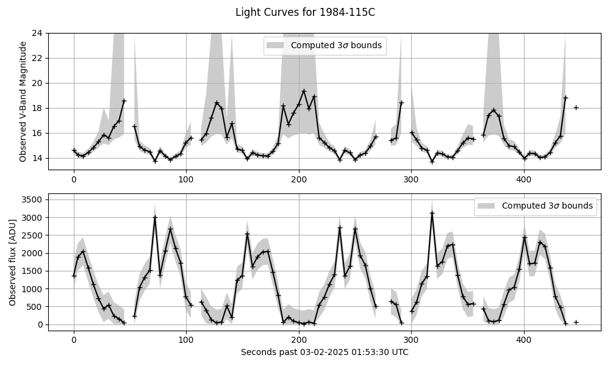
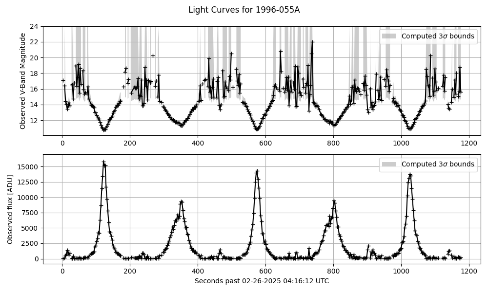

Note
Go to the end to download the full example code.
Plotting Light Curves#
Plotting the light curves used for inversion


Processing delta
Target COSPAR ID 1984-115C
Initial observation time 2025-03-02 01:53:30.251000+00:00
Integration time 3.0
Light curve duration 0:07:30.650000
Measurement frequency 0.22190169754798625 obs/sec
Observations 100 (92 extracted)
We should search up to a maximum angular velocity of 5.54e+00
itensor=array([[16.26130924, 0. , 0. ],
[ 0. , 27.90914712, 0. ],
[ 0. , 0. , 27.90914712]])
/Users/liamrobinson/Documents/maintained-research/mirage/examples/15-attitude-sdc-2025/plot_lcs.py:170: DeprecationWarning: `trapz` is deprecated. Use `trapezoid` instead, or one of the numerical integration functions in `scipy.integrate`.
integral_term = np.trapz(
Processing echo
Target COSPAR ID 1996-055A
Initial observation time 2025-02-26 04:16:12.279000+00:00
Integration time 1.0
Light curve duration 0:19:36.154000
Measurement frequency 0.3877043312355355 obs/sec
Observations 456 (395 extracted)
We should search up to a maximum angular velocity of 1.55e+00
itensor=array([[9512.46666667, 0. , 0. ],
[ 0. , 1771.26666667, 0. ],
[ 0. , 0. , 9608.56666667]])
import matplotlib.pyplot as plt
import numpy as np
import polars as pl
import mirage as mr
def main():
# ITENSOR FOR THE STAR-37E
m = 83.1 # empty mass, no propellant, kg
diam_m = 0.93
length_m = 1.69 # Approximated from the Star-37FM (https://space.skyrocket.de/doc_eng/star-37.htm)
r2 = diam_m / 2 # Radius of the outside of the shell
r1 = 0.9 * r2 # Radius of the inside of the shell
h = length_m # Length of the cylidrical shell approximation
rb_itensor = np.diag(
[
1 / 2 * m * (r2**2 + r1**2),
1 / 12 * m * (3 * (r2**2 + r1**2) + h**2),
1 / 12 * m * (3 * (r2**2 + r1**2) + h**2),
]
)
# ITENSOR FOR ECHOSTAR II
total_wingspan = 23.9
len_pan = 8.5 # meters
width_pan = 3.1 # meters
m_box = 1900 # kg (total_mass = 2020 # kg)
m_pan = 60 # kg (each)
box_side_length = 2.3 # meters
panel_d = total_wingspan / 2 - len_pan / 2
box_itensor = np.diag(3 * [1 / 6 * m_box * box_side_length**2])
panel_itensor_cm = np.diag(
[
1 / 12 * m_pan * len_pan**2,
1 / 12 * m_pan * width_pan**2,
1 / 12 * m_pan * (len_pan**2 + width_pan**2),
]
)
panel_disp = np.array([0, panel_d, 0])
panel_itensor = panel_itensor_cm.copy()
for i in range(3):
for j in range(3):
panel_itensor[i, j] += m_pan * (
np.linalg.norm(panel_disp) ** 2 * (i == j)
- panel_disp[i] * panel_disp[j]
)
echostar_ii_tensor = box_itensor + 2 * panel_itensor
df1 = pl.read_parquet(
'/Users/liamrobinson/Documents/maintained-research/mirage/data/2025-03-02-DELTA_1_R_B_2-15402-00015271.parquet'
# '/Users/liamrobinson/Documents/maintained-research/mirage/data/2025-02-19-DELTA_1_R_B_2-15402-00013630.parquet'
)
df2 = pl.read_parquet(
'/Users/liamrobinson/Documents/maintained-research/mirage/data/2025-02-26-ECHOSTAR_2-24313-00014800.parquet'
)
rb_opath = '/Users/liamrobinson/Documents/maintained-research/mirage/examples/15-attitude-sdc-2025/models/star37e-quad.obj'
echo_opath = '/Users/liamrobinson/Documents/maintained-research/mirage/examples/15-attitude-sdc-2025/models/echostar-ii-quad.obj'
frac_delta = 1
frac_echo = 1 / 2
for _df, itensor, opath, frac_keep, label in [
(df1, rb_itensor, rb_opath, frac_delta, 'delta'),
(df2, echostar_ii_tensor, echo_opath, frac_echo, 'echo'),
]:
print(f'Processing {label}')
df = _df.with_columns(
(pl.col('start_date_utc') - pl.col('start_date_utc').shift(1))
.dt.total_microseconds()
.fill_null(0)
.cum_sum()
.alias('epsecs')
/ 1e6
)
print(
f'Target COSPAR ID {mr.satdef_from_identifier(df["norad_cat_id"][0]).ides}'
)
print(f'Initial observation time {df["start_date_utc"][0]}')
print(f'Integration time {df["exp_time_us"][0].total_seconds()}')
lc_dur = np.ptp(df['start_date_utc'].to_list())
print(f'Light curve duration {lc_dur}')
print(f'Measurement frequency {df.height / lc_dur.total_seconds()} obs/sec')
print(f'Observations {df.height} ({df.drop_nulls().height} extracted)')
# df = df.drop_nulls()
epsecs = df['epsecs'].to_numpy()
positive_freqs = np.fft.fftfreq(df.height, d=epsecs[1] - epsecs[0])[
1 : df.height // 2
] # cycles / s
power_spectrum = np.abs(np.fft.rfft(df['flux_adu'].fill_null(0)))[
1:-1
] # Power spectrum
max_freq = positive_freqs[np.argmax(power_spectrum)] # cycles / sec
max_ang = max_freq * np.pi * 2
print(
f'We should search up to a maximum angular velocity of {np.rad2deg(max_ang):.2e}'
)
print(f'{itensor=}')
ides = mr.satdef_from_identifier(df['norad_cat_id'][0]).ides
obj = mr.SpaceObject(
'cube.obj', # We don't need the geometry here
identifier=ides,
)
station = mr.Station()
dates = np.array(df['start_date_utc'].to_list())
integration_time_s = df['exp_time_us'][0].total_seconds()
# integration_time_s = 0.1
r_obj = obj.propagate(dates)
r_obs = station.j2000_at_dates(dates)
r_sun = mr.sun(dates)
R_ocross = mr.vecnorm(r_sun) / mr.AstroConstants.au_to_km
r = mr.vecnorm(r_obs - r_obj)
ovi = mr.hat(r_obs - r_obj)
svi = mr.hat(r_sun - r_obj)
az, el = station.eci_to_az_el(dates, -ovi)
assert np.all(el > 0)
iy_over_ix = itensor[1, 1] / itensor[0, 0]
iz_over_ix = itensor[2, 2] / itensor[0, 0]
lambdas = np.linspace(300, 1000, 100)
theta_z = mr.angle_between_vecs(-ovi, r_obs) # Zenith angle
Q = station.telescope.ccd.quantum_efficiency(lambdas)
T = mr.atmospheric_transmission(lambdas, theta_z, altitudes=station.alt_km)
I_odot = mr.sun_spectrum(lambdas)
inv_energy = lambdas / (
1e9
* mr.AstroConstants.planck_constant
* mr.AstroConstants.speed_of_light_vacuum
)
# norm brightness has units m^2
# m^2 / m^2 / AU^2 / (W / m^2 / nm)
norm_bright_to_mag = lambda x: mr.apparent_magnitude_in_band(
lambdas, I_odot / R_ocross**2 * x.reshape(-1, 1) / (r**2 * 1e6), band='V'
)
# input is W / m^2 / nm * m^2 / m^2 = W / m^2 / nm (good)
# plt.plot(lambdas, T[0,:], label='T')
# plt.plot(lambdas, Q, label='Q')
# plt.show()
# endd
integral_term = np.trapz(
Q * T * I_odot * inv_energy, lambdas
) # W / m^2 * (s^2 / kg / m^2) / photon * nm
outer_factor = (
station.telescope.aperture_area
* integration_time_s
/ (station.telescope.gain * R_ocross**2 * r**2 * 1e6)
) # 1e6 to convert r in km to m, overall units m^2 * s / (m^2) = s
normalized_brightness_to_counts = (
outer_factor.flatten() * integral_term.flatten()
)
# print(normalized_brightness_to_counts[0])
# endd
lc_adu_obs = df['flux_adu'].to_numpy()
lc_norm_obs = lc_adu_obs / normalized_brightness_to_counts
# fwhm_pixel_widths = station.telescope.fwhm / station.telescope.ccd.pixel_scale
# fwhm_sigma = fwhm_pixel_widths / (2 * np.sqrt(2 * np.log(2))) # Pixels
# pixels_area = np.pi * (3 * fwhm_sigma) ** 2
pixels_area = 100
flat_field_k = 0.01
ccd_signal = mr.signal_spread(20, 3)
ccd_signal_vecnorm = mr.vecnorm(ccd_signal.flatten())
flat_field_noise_std = flat_field_k * ccd_signal_vecnorm * lc_adu_obs
sensor_read_noise_std = np.full_like(
epsecs, np.sqrt(pixels_area) * station.telescope.ccd.read_noise
) # Gaussian, in ADU
shot_noise_std = np.sqrt(lc_adu_obs / station.telescope.gain) # Poisson, in ADU
background_noise_std = np.sqrt(
station.sky_brightness(dates, -ovi, integration_time_s) * pixels_area
) # Poisson, in ADU
scintillation_noise_std = (
lc_adu_obs
* station.scintillation_noise_std(theta_z, integration_time_s).flatten()
) # Gaussian, in ADU
sigma_obs_counts = np.sqrt(
sensor_read_noise_std**2
+ shot_noise_std**2
+ background_noise_std**2
+ scintillation_noise_std**2
+ flat_field_noise_std**2
)
sigma_obs_norm = sigma_obs_counts / normalized_brightness_to_counts
df = df.with_columns(
pl.Series('lc_norm_obs', lc_norm_obs),
pl.Series('sigma_obs_counts', sigma_obs_counts),
pl.Series('sigma_obs_norm', sigma_obs_norm),
pl.Series('iy_over_ix_est', [iy_over_ix for _ in range(df.height)]),
pl.Series('iz_over_ix_est', [iz_over_ix for _ in range(df.height)]),
pl.Series(
'w0_max', [max_ang for _ in range(df.height)]
), # Based on the observed frequencies
pl.Series('svi', svi),
pl.Series('ovi', ovi),
pl.Series('obj_path', [opath for _ in range(df.height)]),
)
df.gather_every(int(1 / frac_keep)).write_parquet(
f'/Users/liamrobinson/Documents/maintained-research/mirage/examples/15-attitude-sdc-2025/data/{label}_in.parquet'
)
plt.figure(figsize=(10, 6))
plt.subplot(2, 1, 1)
ym = 24
lm = norm_bright_to_mag(lc_norm_obs)
lmm = norm_bright_to_mag(np.clip(lc_norm_obs - 3 * sigma_obs_norm, 0, np.inf))
lmm[np.isinf(lmm)] = ym
lmp = norm_bright_to_mag(np.clip(lc_norm_obs + 3 * sigma_obs_norm, 0, np.inf))
plt.plot(df['epsecs'], lm, '+-', c='k')
plt.fill_between(
epsecs,
lmp,
lmm,
alpha=0.4,
color='gray',
edgecolor=None,
label='Computed $3\sigma$ bounds',
)
plt.ylim(plt.ylim()[0], ym)
plt.ylabel('Observed V-Band Magnitude')
plt.grid()
plt.legend()
plt.subplot(2, 1, 2)
plt.plot(df['epsecs'], df['flux_adu'], '+-', c='k')
plt.fill_between(
epsecs,
np.clip(lc_adu_obs - 3 * sigma_obs_counts, 0, np.inf),
np.clip(lc_adu_obs + 3 * sigma_obs_counts, 0, np.inf),
alpha=0.4,
color='gray',
edgecolor=None,
label='Computed $3\sigma$ bounds',
)
plt.suptitle(f'Light Curves for {ides}')
plt.xlabel(
f'Seconds past {df["start_date_utc"][0].strftime("%m-%d-%Y %H:%M:%S")} UTC'
)
plt.ylabel('Observed flux [ADU]')
plt.grid()
plt.legend()
plt.tight_layout()
plt.show()
if __name__ == '__main__':
main()
Total running time of the script: (0 minutes 1.358 seconds)